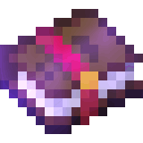
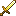
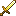
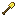
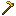
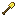
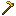

O que são encantamentos?
Encantamento é um mecanismo que melhora armaduras, ferramentas, armas (espadas, arcos) e livros com um ou mais "encantamentos", aprimorando habilidades existentes de um item ou agregando habilidades adicionais. Uma animação especial cintilante roxa aparece nos itens encantados.
Tutorial de Encantamento Minecraft

1. Criando a Mesa de Encantamentos
Para criar uma mesa de encantamentos, você precisará de:
- 4 blocos de obsidiana
- 3 diamantes
- 2 livros
- 4 pedras luminosas
Coloque a obsidiana em uma formação de 3x3 no chão, com um espaço no meio. Coloque os diamantes nos cantos, os livros no meio e as pedras luminosas nas bordas.
2. Obtendo Encantamentos
Para encantar itens, você precisará de experiência (XP) e lapis-lazúli. Você pode ganhar XP derrotando mobs, minerando, fundindo itens, ou completando tarefas no jogo. O lapis-lazúli pode ser encontrado minerando blocos de lapislázuli nas profundezas do mundo.
3. Encantando Itens
- Coloque a mesa de encantamentos no chão.
- Clique com o botão direito na mesa para abrir a interface de encantamento.
- Coloque o item que deseja encantar no slot correspondente.
- Adicione lapis-lazúli nos slots ao lado do item.
- Uma lista de encantamentos disponíveis aparecerá. Passe o mouse sobre cada opção para ver detalhes.
- Escolha o encantamento desejado e clique para confirmar a seleção.
- OBS: Para conseguir encantamentos melhores, coloque estantes de livros ao redor da mesa de encantamentos.


4. Usando a Bigorna
A bigorna permite combinar encantamentos e reparar itens. Para usá-la:
- Coloque a bigorna no chão.
- Clique com o botão direito na bigorna para abrir a interface.
- Coloque o item que deseja encantar no primeiro slot.
- Coloque o livro encantado ou outro item no segundo slot.
- O encantamento será transferido para o item no primeiro slot. Certifique-se de ter experiência (XP) suficiente para concluir o processo.
.png)
5. Trocando com Aldeões
Trocar com aldeões é outra maneira de obter encantamentos. Aldeões bibliotecários podem oferecer livros encantados em troca de esmeraldas. Para trocar com um aldeão:
- Encontre um aldeão bibliotecário (geralmente encontrado em vilas).
- Clique com o botão direito no aldeão para abrir a interface de troca.
- Verifique as ofertas de encantamento disponíveis e troque esmeraldas pelo livro encantado desejado.
.jpeg)
.jpeg)


 

 


